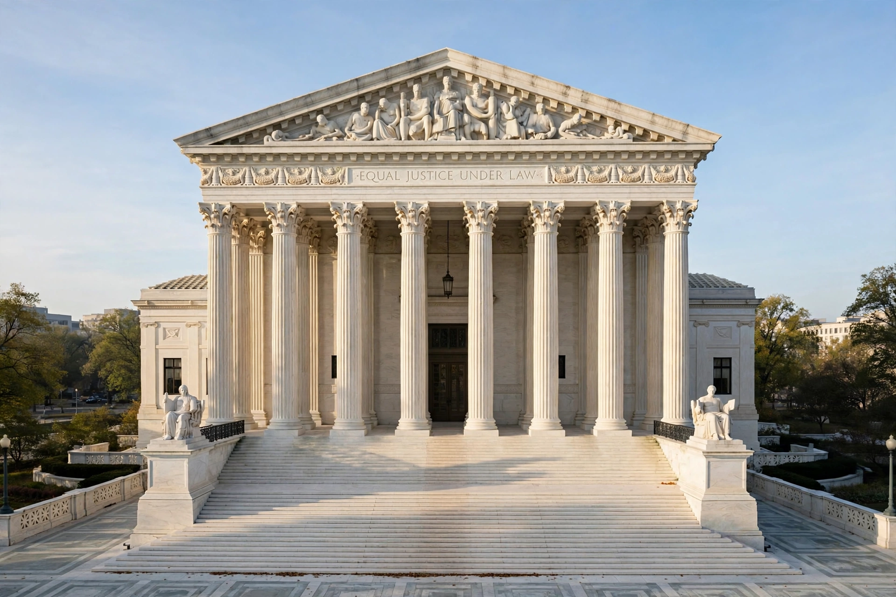

Supreme Court of the United States
From Wikipedia, the free encyclopedia
The Supreme Court of the United States (SCOTUS) is the highest court in the federal judiciary of the United States. It has ultimate appellate jurisdiction over all federal and state court cases involving questions of US federal or constitutional law, and original jurisdiction in a small class of cases (including disputes between states). Its nine justices — a chief justice and eight associate justices — are nominated by the President, confirmed by the Senate, and serve during good behaviour (effectively for life).

The Supreme Court Building in Washington, D.C., opened in 1935.
Established by Article III of the United States Constitution and organised by the Judiciary Act of 1789, the Court asserted the power of judicial review in Marbury v. Madison (1803). It sits in Washington, D.C., hears argument in roughly 60–80 cases a term from many thousands of petitions (granting certiorari by vote of four justices), and issues decisions that bind all American courts. Landmark rulings — Brown v. Board (1954), Miranda (1966), Roe (1973) and Dobbs (2022) — mark its central place in American public life, and its appointments are correspondingly contested political events.
Composition and procedure
The Court's size is set by statute and has been nine since 1869; “court-packing” proposals (notably Franklin Roosevelt's failed 1937 plan) recur in reform debates, alongside term limits and ethics codes (the Court adopted a code of conduct in 2023). Most cases arrive by writ of certiorari; decisions are by majority, with concurrences and dissents published. The Chief Justice presides and, when in the majority, assigns the opinion, and presides over presidential impeachment trials in the Senate.
See also
Judicial review · Chief Justice · Marbury v. Madison · United States Constitution